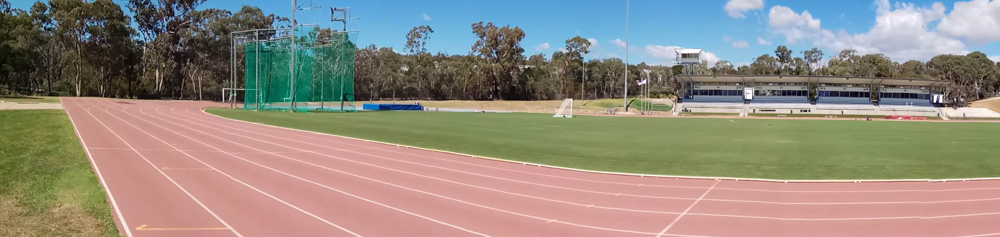
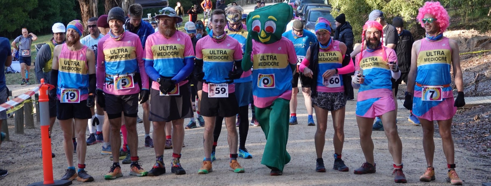
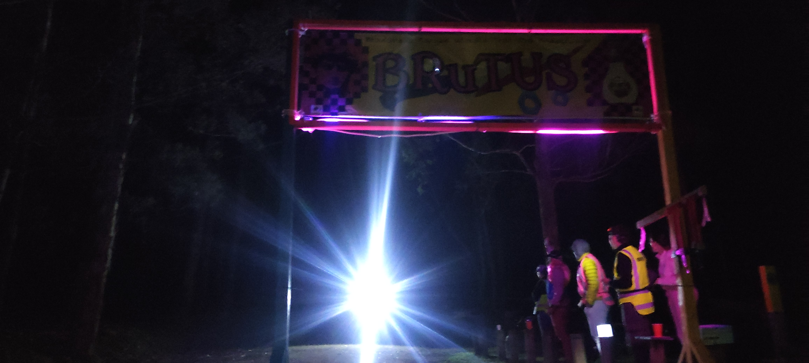
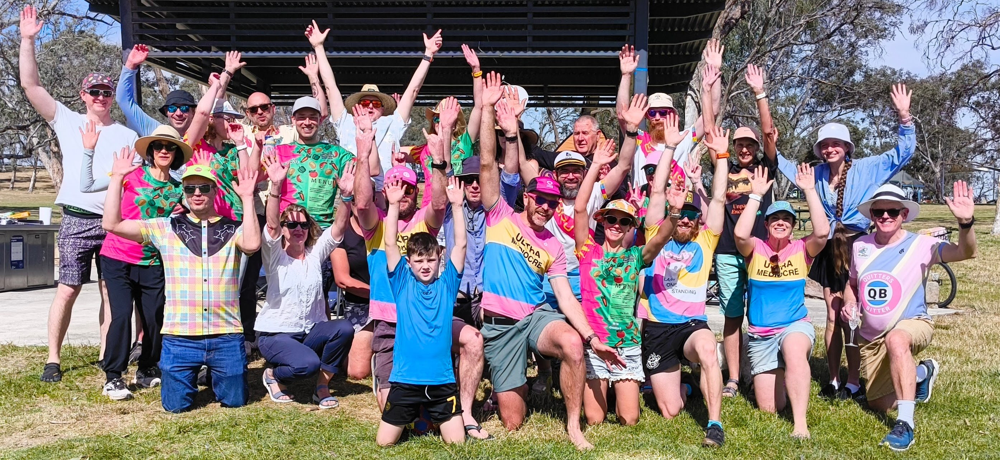

Our Beginnings
In 2020 the world was shutting down. At the same time a small group of Canberra runners were getting serious about ultra distances, but with the threat of Covid-19 transmissions, ultrarunning events began to drop from the calander. The last straw was the Canberra 24 and 48-Hour Track Race at the Australian Institute of Sport. We believed it would go ahead, but days before the race the word came down: the AIS facilities were reserved for elite athletes only. Elites! Apparently, running for 24 or 48 hours was the territory of the mediocre.
In that moment of being deemed not good enough for the training grounds of Olympic hopefuls, the Ultra Mediocre Runners of Canberra or UMRoC was born. We embraced the irony and carried on conquering mountains and setting records elsewhere.
As an establishing action we made our mark on the Canberra Centenary Trail (we call it 'The Cent'), a 145km loop around our capital city, claiming mens and womens fastest known tims.

Then came the T-shirts followed by incorporation as an associated sports club on 27 January, 2021, ostensibly to look serious enough to be permitted to organise our first public-facing event, a last-one-standing christened the Great Ultra Mediocre Back Yarder, or the GUMBY.
In 2023 UMRoC premiered it's second public-facing event, the Brindabella Ranges ultimate Trail Ultra Spectacular or the BRuTUS, with 14km (the Knife) and 60km distances. In 2024 with much pride, we added a 100km distance (the BTrail), which takes in the best of the Brindabella Ranges, mountain playground on the western boarder of the ACT.
Our members show a lot of pluck in their mediocrity, and we honor them with club nicknames which in some way arise from their running exploits.
This is who we are. We are UMRoC and we run far. And in running far, we continue to learn the lesson that if you're not mediocre, you just haven't run far enough.
